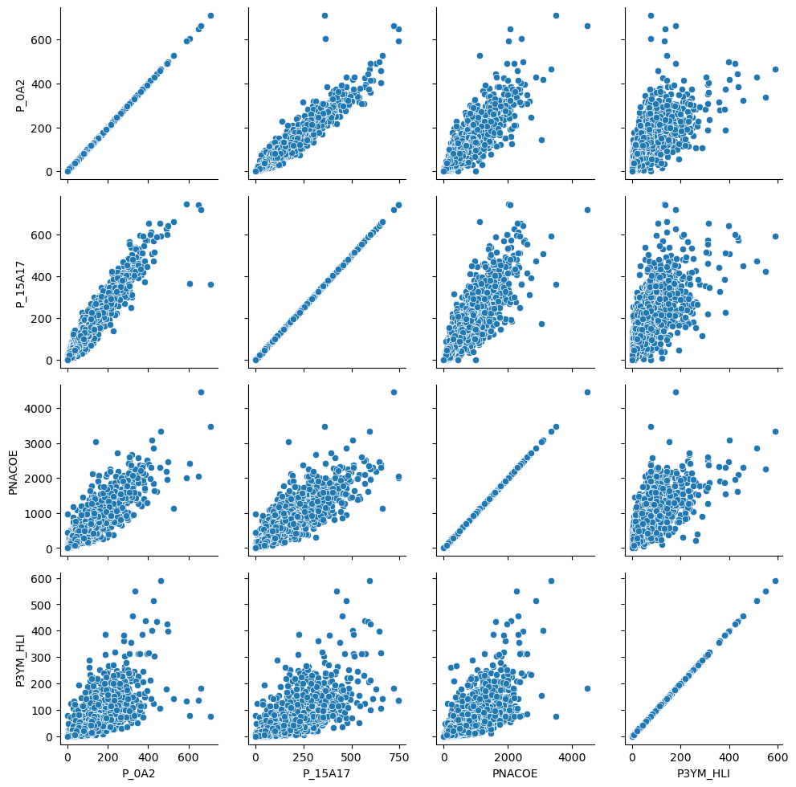
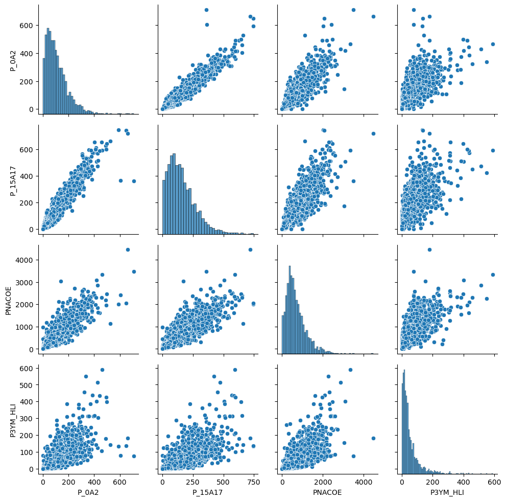

import os
import pandas as pd
import seaborn as sns
import numpy as np1 Transformación de datos
Las bases de datos provenientes de situaciones reales son problemáticas; contienen datos faltantes, diferentes estructuras, etcétera. En general, para analizar un conjunto de datos primero es necesario transformarlos, ya sea para corregir errores o para ajustarlos a un formato que se adapte mejor a los métodos de análisis que queremos utilizar.
Dentro del análisis de datos en general y especialmente en el análisis de datos geoespaciales, una buena parte del tiempo y esfuerzo se consume en tareras relacionadas con la limpieza y transformación de datos. Dado lo extenuantes y relevantes que son estas tareas, es sorprendente encontrar que existen muy pocas publicaciones referentes a los patrones, técnicas y buenas prácticas existentes para una eficiente limpieza, manipulación y transformación de los datos.
En este taller nos vamos a enfocar en utilizar bases de datos provenientes del mundo real para aprender cómo leerlas usando bibliotecas de Python, de modo que puedan ser transformadas y manipuladas con el fin de ser eventualmente analizadas.
El primer paso es importar todas las librerías que vamos a utilizar:
- os Provee de múltiples utilidades del sistema
- pandas La librería fundamental para la transformación de datos en Python
- seaborn Herramientas para generar gráficas estadísticas
- numpy la librería básica de análisis numérico y vectorial
1.1 Conjunto de Datos
Vamos a utlizar los datos del Censo de Poblacioń y Vivienda 2020 de INEGI. Trabajaremos con los datos a nivel AGEB para la Ciudad de México. Una AGEB se define como un Área Geográfica ocupada por un conjunto de manzanas perfectamente delimitadas por calles, avenidas, andadores o cualquier otro rasgo de fácil identificación en el terreno y cuyo uso de suelo es principamete habitacional, industrial, de servicios, etc.. Las AGEB’s son la unidad básica de representatividad del Marco Geoestadístico Nacional, son lo suficientemente pequeñas para representar la variabilidad espacial, pero lo suficientemente grandes para mantener la privacidad de la población y disminuir efectos de ruido estadístico.
Los datos son publicados por INEGI en un archivo en formato csv que contiene diferentes agregaciones geográficas en el mismo archivo. Para entenderlo bien, vamos a abrirlo:
Note
El archivo con los datos lo encuentras en la caropeta de datos del libro con el nombre conjunto_de_datos_ageb_urbana_09_cpv2020.zip
Warning
Dentro de este libro, la convención es que los datos están guardados en la carpeta datos/ relativa al notebook que se esté ejecutando.
db = pd.read_csv('datos/conjunto_de_datos_ageb_urbana_09_cpv2020.zip',
dtype={'ENTIDAD': object,
'MUN':object,
'LOC':object,
'AGEB':object})
db.head()| ENTIDAD | NOM_ENT | MUN | NOM_MUN | LOC | NOM_LOC | AGEB | MZA | POBTOT | POBFEM | ... | VPH_TELEF | VPH_CEL | VPH_INTER | VPH_STVP | VPH_SPMVPI | VPH_CVJ | VPH_SINRTV | VPH_SINLTC | VPH_SINCINT | VPH_SINTIC | |
|---|---|---|---|---|---|---|---|---|---|---|---|---|---|---|---|---|---|---|---|---|---|
| 0 | 09 | Ciudad de México | 000 | Total de la entidad Ciudad de México | 0000 | Total de la entidad | 0000 | 0 | 9209944 | 4805017 | ... | 1898265 | 2536523 | 2084156 | 1290811 | 957162 | 568827 | 46172 | 77272 | 561128 | 10528 |
| 1 | 09 | Ciudad de México | 002 | Azcapotzalco | 0000 | Total del municipio | 0000 | 0 | 432205 | 227255 | ... | 96128 | 123961 | 105899 | 66399 | 50965 | 31801 | 1661 | 2869 | 22687 | 322 |
| 2 | 09 | Ciudad de México | 002 | Azcapotzalco | 0001 | Total de la localidad urbana | 0000 | 0 | 432205 | 227255 | ... | 96128 | 123961 | 105899 | 66399 | 50965 | 31801 | 1661 | 2869 | 22687 | 322 |
| 3 | 09 | Ciudad de México | 002 | Azcapotzalco | 0001 | Total AGEB urbana | 0010 | 0 | 3183 | 1695 | ... | 741 | 772 | 692 | 313 | 221 | 145 | 8 | 14 | 148 | 5 |
| 4 | 09 | Ciudad de México | 002 | Azcapotzalco | 0001 | Azcapotzalco | 0010 | 1 | 159 | 86 | ... | 45 | 42 | 39 | 18 | 13 | 6 | * | 0 | 9 | 0 |
5 rows × 230 columns
La librería Pandas es la que provee la funcionalidad para trabajar con datos tabulares en Python. La estructura fundamental de Pandas es el DataFrame, podemos pensar en los DataFrames como hojas de Excel, con columnas nombradas que funcionan como indices para las variables y filas para las observaciones.
Para leer el archivo utilizamos el método read_csv() de los DataFrames de Pandas. El parámetro dtype que le pasamos a la función nos asegura que ciertas columnas se lean con un tipo de datos especial, en este caso como object, para asegurarnos que no se lean como números y perdamos identificadores, vamos a regresar a esto más adelante.
La columna que nos interesa ahorita es NOM_LOC, esta nos ayuda a distinguiir los datos que vienen en cada fila: las filas etiquetadas con Total AGEB urbana contienen los conteos para cada AGEB de todas las variables, entonces, nuestra primera tarea es filtrar la base y quedarnos sólo con las columnas que en la columna NOM_LOC dice Total AGEB urbana.
db = db.loc[db['NOM_LOC'] == 'Total AGEB urbana']
db.head()| ENTIDAD | NOM_ENT | MUN | NOM_MUN | LOC | NOM_LOC | AGEB | MZA | POBTOT | POBFEM | ... | VPH_TELEF | VPH_CEL | VPH_INTER | VPH_STVP | VPH_SPMVPI | VPH_CVJ | VPH_SINRTV | VPH_SINLTC | VPH_SINCINT | VPH_SINTIC | |
|---|---|---|---|---|---|---|---|---|---|---|---|---|---|---|---|---|---|---|---|---|---|
| 3 | 09 | Ciudad de México | 002 | Azcapotzalco | 0001 | Total AGEB urbana | 0010 | 0 | 3183 | 1695 | ... | 741 | 772 | 692 | 313 | 221 | 145 | 8 | 14 | 148 | 5 |
| 30 | 09 | Ciudad de México | 002 | Azcapotzalco | 0001 | Total AGEB urbana | 0025 | 0 | 5593 | 2915 | ... | 1373 | 1510 | 1203 | 478 | 349 | 238 | 28 | 68 | 393 | 14 |
| 82 | 09 | Ciudad de México | 002 | Azcapotzalco | 0001 | Total AGEB urbana | 003A | 0 | 4235 | 2232 | ... | 965 | 1049 | 878 | 361 | 339 | 247 | 5 | 12 | 250 | * |
| 116 | 09 | Ciudad de México | 002 | Azcapotzalco | 0001 | Total AGEB urbana | 0044 | 0 | 4768 | 2551 | ... | 1124 | 1237 | 1076 | 481 | 452 | 294 | 10 | 17 | 254 | * |
| 163 | 09 | Ciudad de México | 002 | Azcapotzalco | 0001 | Total AGEB urbana | 0097 | 0 | 2176 | 1115 | ... | 517 | 562 | 507 | 276 | 260 | 153 | 4 | 3 | 70 | 0 |
5 rows × 230 columns
Lo que hicimos aquí fue utlizar el selector loc de pandas para seleccionar las filas que queremos, pasándole el filtro que nos interesa, en este caso db['NOM_LOC'] == 'Total AGEB urbana'
1.2 Limpieza de los datos
Hasta aquí lo que tenemos es un DataFrame con todas las variables del censo agregadas por AGEB. Ahora, para poder realizar análisis a partir de esta base de datos, necesitamos asegurarnos de que los datos son del tipo correcto, es decir, si vamos a hacer cuentas, los datos deben ser de tipo float o int. Utlicemos entonces la propiedad db.dtypes para preguntar los tipos de datos.
db.dtypesENTIDAD object
NOM_ENT object
MUN object
NOM_MUN object
LOC object
...
VPH_CVJ object
VPH_SINRTV object
VPH_SINLTC object
VPH_SINCINT object
VPH_SINTIC object
Length: 230, dtype: objectComo podemos ver, no sólo las columnas que pedimos que leyera como object las leyó así, también las demás columnas. Esto se puede deber a que tienen codificados valores faltantes con caracteres especiales, por lo que pandas no pudo convertirlos automáticamente en números.
Para entender esto un poco mejor, vamos a leer el diccionario de datos del censo.
Note
También pueden explorar el archivo en excel, para verlo con más calma
diccionario = pd.read_csv('datos/diccionario_datos_ageb_urbana_09_cpv2020.csv', skiprows=3)
diccionario| Núm. | Indicador | Descripción | Mnemónico | Rangos | Longitud | |
|---|---|---|---|---|---|---|
| 0 | 1 | Clave de entidad federativa | Código que identifica a la entidad federativa.... | ENTIDAD | 00…32 | 2 |
| 1 | 2 | Entidad federativa | Nombre oficial de la entidad federativa. | NOM_ENT | Alfanumérico | 50 |
| 2 | 3 | Clave de municipio o demarcación territorial | Código que identifica al municipio o demarcaci... | MUN | 000…570 | 3 |
| 3 | 4 | Municipio o demarcación territorial | Nombre oficial del municipio o demarcación ter... | NOM_MUN | Alfanumérico | 50 |
| 4 | 5 | Clave de localidad | Código que identifica a la localidad al interi... | LOC | 0000…9999 | 4 |
| ... | ... | ... | ... | ... | ... | ... |
| 225 | 218 | Viviendas particulares habitadas que disponen ... | Viviendas particulares habitadas que tienen co... | VPH_CVJ | 0…999999999 | 9 |
| 226 | 219 | Viviendas particulares habitadas sin radio ni ... | Viviendas particulares habitadas que no cuenta... | VPH_SINRTV | 0…999999999 | 9 |
| 227 | 220 | Viviendas particulares habitadas sin línea tel... | Viviendas particulares habitadas que no cuenta... | VPH_SINLTC | 0…999999999 | 9 |
| 228 | 221 | Viviendas particulares habitadas sin computado... | Viviendas particulares habitadas que no cuenta... | VPH_SINCINT | 0…999999999 | 9 |
| 229 | 222 | Viviendas particulares habitadas sin tecnologí... | Viviendas particulares habitadas que no cuenta... | VPH_SINTIC | 0…999999999 | 9 |
230 rows × 6 columns
Warning
Fíjense como pasamos skiprows=3 para leer el diccionario del censo. Esto le dice a pandas que el header (los nombres de las columnas), vienen en el cuarto renglón.
A partir de este diccionario podemos ver que hay varias formas de codificar valores faltantes: ‘999999999’, ‘99999999’, ’*’ y ‘N/D’.
Para poder convertir todas estas columnas en numéricas tenemos que reemplazar todos esos valores por la forma en la que se expresan los datos faltantes en Pandas, utilizando el valor Not a Number de numpy. Para hacer este reemplazo vamos a usar la función replace de Pandas, que toma como argumento el valor que queremos reemplazar y el valor por el cual lo queremos reemplazar:
db = (db
.replace('999999999', np.nan)
.replace('99999999', np.nan)
.replace('*', np.nan)
.replace('N/D', np.nan))¡Esta fue una instrucción complicada!
Pero no es realmente difícil. Como hemos visto hasta aquí, los métodos de los DataFrames en general regresan otros DataFrames con el resultado de la operación, esto nos permite encadenar métodos, de forma que cuando hacemos db..replace('999999999', np.nan)..replace('99999999', np.nan), el segundo replace opera sobre el resultado del primero y así sucesivamente. Este encadenamiento de métodos nos ayuda a escribir código más fácil de leer.
Ahora ya tenemos todos los valores faltantes codificados adecuadamente, sin embargo aún nos falta convertirlos a números ¿verdad?
db.dtypesENTIDAD object
NOM_ENT object
MUN object
NOM_MUN object
LOC object
...
VPH_CVJ object
VPH_SINRTV object
VPH_SINLTC object
VPH_SINCINT object
VPH_SINTIC object
Length: 230, dtype: objectLa forma normal de cambiar el tipo de datos de una columna es utilizar el método astype
db['VPH_CVJ'].astype('float').dtypesdtype('float64')
Note
Aquí no estamos asignando el resultado de la operación a ninguna variable, el resultado de esta operación no modifica el valor de los datos.
Así podríamos ir cambiando columna por columna, pero como estamos programando ¡nos gusta hacer las cosas en bruto!
En el diccionario de datos tenemos los nombres de todas las variables, entonces podemos utilizar estos nombres para seleccionar todas las columnas que contienen datos numéricos y cambiar su tipo en el DataFrame. Fíjense que las primeras 8 filas del diccionario contienen los identificadores geográficos:
diccionario.head(8)| Núm. | Indicador | Descripción | Mnemónico | Rangos | Longitud | |
|---|---|---|---|---|---|---|
| 0 | 1 | Clave de entidad federativa | Código que identifica a la entidad federativa.... | ENTIDAD | 00…32 | 2 |
| 1 | 2 | Entidad federativa | Nombre oficial de la entidad federativa. | NOM_ENT | Alfanumérico | 50 |
| 2 | 3 | Clave de municipio o demarcación territorial | Código que identifica al municipio o demarcaci... | MUN | 000…570 | 3 |
| 3 | 4 | Municipio o demarcación territorial | Nombre oficial del municipio o demarcación ter... | NOM_MUN | Alfanumérico | 50 |
| 4 | 5 | Clave de localidad | Código que identifica a la localidad al interi... | LOC | 0000…9999 | 4 |
| 5 | 6 | Localidad | Nombre con el que se reconoce a la localidad d... | NOM_LOC | Alfanumérico | 70 |
| 6 | 7 | Clave del AGEB | Clave que identifica al AGEB urbana, al interi... | AGEB | 001...999; 0...9 o A-P | 4 |
| 7 | 8 | Clave de manzana | Clave que identifica a la manzana, al interior... | MZA | 001...999 | 3 |
Las demás filas contienen los nombres (y descripciones) de las variables del Censo.
campos_datos = diccionario.loc[8:,]['Mnemónico']
campos_datos8 POBTOT
9 POBFEM
10 POBMAS
11 P_0A2
12 P_0A2_F
...
225 VPH_CVJ
226 VPH_SINRTV
227 VPH_SINLTC
228 VPH_SINCINT
229 VPH_SINTIC
Name: Mnemónico, Length: 222, dtype: objectAquí utilizamos una vez más el método loc para seleccionar filas en nuestros datos. En esta ocasión seleccionamos las filas por índice (en este momento nuestro índice es simplemente el número de fila, más adelante usaremos índices diferentes), la selección loc[8:,] simplemente quiere decir todas las columnas para las filas de la 9 en adelante.
También estamos seleccionando una única columna al hacer ['Mnemónico'], el resultado de esta selección ya no es un DataFrame, es una Serie. Las series son las estructuras que usa Pandas para guardar una sóla columna (o fila).
Las Series se pueden utilizar (igual que las listas) para seleccionar columnas de un DataFrame, entoinces, ahora sí podemos cambiar todos los tipos de datos de una sola vez.
db[campos_datos] = db[campos_datos].astype('float')
db.dtypesENTIDAD object
NOM_ENT object
MUN object
NOM_MUN object
LOC object
...
VPH_CVJ float64
VPH_SINRTV float64
VPH_SINLTC float64
VPH_SINCINT float64
VPH_SINTIC float64
Length: 230, dtype: object1.3 Descripciones de los datos
Pandas nos provee una serie de métodos para obtener descripciones generales de la tabla. Podemos usar el método info para obtener una descripción general de la estructura de la tabla y el espacio que ocupa en la memoria:
db.info()<class 'pandas.core.frame.DataFrame'>
Int64Index: 2433 entries, 3 to 68915
Columns: 230 entries, ENTIDAD to VPH_SINTIC
dtypes: float64(222), int64(1), object(7)
memory usage: 4.3+ MBPara obtener las estadísticas descriptivas podemos usar el método describe:
db.describe()| MZA | POBTOT | POBFEM | POBMAS | P_0A2 | P_0A2_F | P_0A2_M | P_3YMAS | P_3YMAS_F | P_3YMAS_M | ... | VPH_TELEF | VPH_CEL | VPH_INTER | VPH_STVP | VPH_SPMVPI | VPH_CVJ | VPH_SINRTV | VPH_SINLTC | VPH_SINCINT | VPH_SINTIC | |
|---|---|---|---|---|---|---|---|---|---|---|---|---|---|---|---|---|---|---|---|---|---|
| count | 2433.0 | 2433.000000 | 2422.000000 | 2423.00000 | 2406.000000 | 2392.000000 | 2390.000000 | 2423.000000 | 2422.000000 | 2423.000000 | ... | 2416.000000 | 2420.000000 | 2418.000000 | 2415.000000 | 2415.000000 | 2410.000000 | 2251.000000 | 2235.000000 | 2405.000000 | 1801.000000 |
| mean | 0.0 | 3758.993835 | 1970.647812 | 1804.64837 | 109.901912 | 54.471990 | 56.089121 | 3661.372678 | 1914.832370 | 1747.329757 | ... | 783.982616 | 1041.995455 | 859.506617 | 533.200000 | 395.840580 | 235.558506 | 20.068858 | 33.803579 | 229.281081 | 5.181011 |
| std | 0.0 | 2433.068753 | 1254.533102 | 1186.95856 | 85.636899 | 42.286817 | 43.908616 | 2347.050678 | 1215.700184 | 1147.281855 | ... | 525.413812 | 690.331581 | 601.110222 | 426.577764 | 390.905691 | 204.624708 | 16.611861 | 30.598161 | 191.422212 | 6.154989 |
| min | 0.0 | 0.000000 | 0.000000 | 0.00000 | 0.000000 | 0.000000 | 0.000000 | 0.000000 | 0.000000 | 0.000000 | ... | 0.000000 | 0.000000 | 0.000000 | 0.000000 | 0.000000 | 0.000000 | 0.000000 | 0.000000 | 0.000000 | 0.000000 |
| 25% | 0.0 | 2045.000000 | 1083.500000 | 974.00000 | 46.250000 | 23.000000 | 24.000000 | 2018.000000 | 1053.000000 | 942.500000 | ... | 456.750000 | 590.000000 | 488.000000 | 271.000000 | 173.000000 | 118.250000 | 8.000000 | 10.000000 | 79.000000 | 0.000000 |
| 50% | 0.0 | 3396.000000 | 1783.500000 | 1616.00000 | 91.000000 | 45.000000 | 46.000000 | 3304.000000 | 1730.500000 | 1566.000000 | ... | 698.500000 | 921.500000 | 749.000000 | 442.000000 | 300.000000 | 189.000000 | 16.000000 | 25.000000 | 185.000000 | 4.000000 |
| 75% | 0.0 | 4992.000000 | 2617.500000 | 2391.00000 | 152.000000 | 75.000000 | 77.000000 | 4852.000000 | 2539.000000 | 2315.000000 | ... | 992.500000 | 1348.250000 | 1083.000000 | 671.000000 | 476.000000 | 288.750000 | 27.000000 | 50.000000 | 336.000000 | 7.000000 |
| max | 0.0 | 21198.000000 | 11128.000000 | 10616.00000 | 709.000000 | 350.000000 | 393.000000 | 20530.000000 | 10774.000000 | 10551.000000 | ... | 6196.000000 | 7867.000000 | 7512.000000 | 5717.000000 | 5903.000000 | 3056.000000 | 149.000000 | 290.000000 | 1488.000000 | 66.000000 |
8 rows × 223 columns
1.4 Creación de variables
Muchas veces vamos a querer crear nuevas columnas a partir de las ya existentes. Por ejemplo, podemos estar interesados en el porcentaje de población femenina en cada AGEB.
pct_fem = db['POBFEM'] / db['POBTOT']
pct_fem.head()3 0.532516
30 0.521187
82 0.527037
116 0.535025
163 0.512408
dtype: float64Fíjense cómo usamos / para dividir dos columnas. El resultado de la operación lo guardamos en la variable pct_fem ¿De qué tipo será esta variable?
pct_fem.info()<class 'pandas.core.series.Series'>
Int64Index: 2433 entries, 3 to 68915
Series name: None
Non-Null Count Dtype
-------------- -----
2405 non-null float64
dtypes: float64(1)
memory usage: 38.0 KBEs una serie, es decir una columna en nuestro caso. Como esta columna comparte el mismo índice que los datos originales (es resultado de una operación renglón por renglón), entonces la podemos agregar al DataFrame original facilmente:
db['pct_fem'] = pct_fem
db['pct_fem'].head()/tmp/ipykernel_5237/2610780181.py:1: PerformanceWarning: DataFrame is highly fragmented. This is usually the result of calling `frame.insert` many times, which has poor performance. Consider joining all columns at once using pd.concat(axis=1) instead. To get a de-fragmented frame, use `newframe = frame.copy()`
db['pct_fem'] = pct_fem3 0.532516
30 0.521187
82 0.527037
116 0.535025
163 0.512408
Name: pct_fem, dtype: float641.4.1 Modificar valores
De la misma forma que podemos agregar columnas (o filas) a nuestro DataFrame, podemos también modificar los valores existentes. Para explorar esto, vamos a crear una nueva columna y llenarla con valores nulos:
# Nueva columna llena de sólamente el número 1
db['Nueva'] = None
db['Nueva'].head()/tmp/ipykernel_5237/463547730.py:2: PerformanceWarning: DataFrame is highly fragmented. This is usually the result of calling `frame.insert` many times, which has poor performance. Consider joining all columns at once using pd.concat(axis=1) instead. To get a de-fragmented frame, use `newframe = frame.copy()`
db['Nueva'] = None3 None
30 None
82 None
116 None
163 None
Name: Nueva, dtype: objectPodemos fácilmente cambiar los valores de todas las filas:
db['Nueva'] = 1
db['Nueva'].head()3 1
30 1
82 1
116 1
163 1
Name: Nueva, dtype: int64O también cambiar el valor sólo para una fila específica:
db.loc[3, 'Nueva'] = 10
db['Nueva'].head()3 10
30 1
82 1
116 1
163 1
Name: Nueva, dtype: int641.4.2 Eliminar columnas
Eliminar columnas es igualmente fácil usando el método drop:
db = db.drop(columns=['Nueva'])
'Nueva' in db.columnsFalse¡Fíjense como preguntamos al final si ya habíamos eliminado la columna!
1.4.3 Buscando datos
Muchas veces queremos encontrar observaciones que cumplan con uno o más criterios. Una vez más, el método loc es nuestro amigop para seleccionar datos. Supongamos que queremos encontrar aquelas AGEBs que tengan una población de ‘65 años o más’ mayor a 1,000 personas.
db_seleccion = db.loc[db['POB65_MAS'] > 1000, :]
db_seleccion.head()| ENTIDAD | NOM_ENT | MUN | NOM_MUN | LOC | NOM_LOC | AGEB | MZA | POBTOT | POBFEM | ... | VPH_CEL | VPH_INTER | VPH_STVP | VPH_SPMVPI | VPH_CVJ | VPH_SINRTV | VPH_SINLTC | VPH_SINCINT | VPH_SINTIC | pct_fem | |
|---|---|---|---|---|---|---|---|---|---|---|---|---|---|---|---|---|---|---|---|---|---|
| 30 | 09 | Ciudad de México | 002 | Azcapotzalco | 0001 | Total AGEB urbana | 0025 | 0 | 5593.0 | 2915.0 | ... | 1510.0 | 1203.0 | 478.0 | 349.0 | 238.0 | 28.0 | 68.0 | 393.0 | 14.0 | 0.521187 |
| 444 | 09 | Ciudad de México | 002 | Azcapotzalco | 0001 | Total AGEB urbana | 0186 | 0 | 11139.0 | 5776.0 | ... | 3299.0 | 2878.0 | 1731.0 | 1407.0 | 994.0 | 54.0 | 47.0 | 470.0 | 4.0 | 0.518538 |
| 3617 | 09 | Ciudad de México | 003 | Coyoacán | 0001 | Total AGEB urbana | 0107 | 0 | 6992.0 | 3673.0 | ... | 2205.0 | 2022.0 | 1478.0 | 1117.0 | 650.0 | 21.0 | 26.0 | 256.0 | 4.0 | 0.525315 |
| 4075 | 09 | Ciudad de México | 003 | Coyoacán | 0001 | Total AGEB urbana | 0287 | 0 | 8213.0 | 4526.0 | ... | 2373.0 | 2226.0 | 1503.0 | 1309.0 | 616.0 | 43.0 | 40.0 | 241.0 | 6.0 | 0.551078 |
| 4886 | 09 | Ciudad de México | 003 | Coyoacán | 0001 | Total AGEB urbana | 0573 | 0 | 12827.0 | 6653.0 | ... | 3437.0 | 2878.0 | 1727.0 | 1409.0 | 863.0 | 59.0 | 82.0 | 669.0 | 6.0 | 0.518672 |
5 rows × 231 columns
Simplemente pasamos la condición que nos interesa al selector y listo.
Los criterios de búsquera pueden ser tan sofisticados como se requiera, por ejemplo, podemos seleccionar los AGEBs en los cuales la población de 0 a 14 años sea menor a un cuarto de la población total:
db_seleccion = db.loc[(db['POB0_14'] / db['POBTOT']) < 0.25, :]
db_seleccion.head()| ENTIDAD | NOM_ENT | MUN | NOM_MUN | LOC | NOM_LOC | AGEB | MZA | POBTOT | POBFEM | ... | VPH_CEL | VPH_INTER | VPH_STVP | VPH_SPMVPI | VPH_CVJ | VPH_SINRTV | VPH_SINLTC | VPH_SINCINT | VPH_SINTIC | pct_fem | |
|---|---|---|---|---|---|---|---|---|---|---|---|---|---|---|---|---|---|---|---|---|---|
| 3 | 09 | Ciudad de México | 002 | Azcapotzalco | 0001 | Total AGEB urbana | 0010 | 0 | 3183.0 | 1695.0 | ... | 772.0 | 692.0 | 313.0 | 221.0 | 145.0 | 8.0 | 14.0 | 148.0 | 5.0 | 0.532516 |
| 30 | 09 | Ciudad de México | 002 | Azcapotzalco | 0001 | Total AGEB urbana | 0025 | 0 | 5593.0 | 2915.0 | ... | 1510.0 | 1203.0 | 478.0 | 349.0 | 238.0 | 28.0 | 68.0 | 393.0 | 14.0 | 0.521187 |
| 82 | 09 | Ciudad de México | 002 | Azcapotzalco | 0001 | Total AGEB urbana | 003A | 0 | 4235.0 | 2232.0 | ... | 1049.0 | 878.0 | 361.0 | 339.0 | 247.0 | 5.0 | 12.0 | 250.0 | NaN | 0.527037 |
| 116 | 09 | Ciudad de México | 002 | Azcapotzalco | 0001 | Total AGEB urbana | 0044 | 0 | 4768.0 | 2551.0 | ... | 1237.0 | 1076.0 | 481.0 | 452.0 | 294.0 | 10.0 | 17.0 | 254.0 | NaN | 0.535025 |
| 163 | 09 | Ciudad de México | 002 | Azcapotzalco | 0001 | Total AGEB urbana | 0097 | 0 | 2176.0 | 1115.0 | ... | 562.0 | 507.0 | 276.0 | 260.0 | 153.0 | 4.0 | 3.0 | 70.0 | 0.0 | 0.512408 |
5 rows × 231 columns
Podemos hacer combinaciones arbitrarias de selectores utilizando los operadores lógicos & (and) y | (or). Por ejemplo, podemos combinar nuestras selecciones anteriores para encontrar las AGEBs con menos de 50% de mujeres y población de 0 a 14 años sea menor a un cuarto de la población total
db_seleccion = db.loc[(db['pct_fem'] < 0.5) &
((db['POB0_14'] / db['POBTOT']) < 0.25), :]
db_seleccion.head()| ENTIDAD | NOM_ENT | MUN | NOM_MUN | LOC | NOM_LOC | AGEB | MZA | POBTOT | POBFEM | ... | VPH_CEL | VPH_INTER | VPH_STVP | VPH_SPMVPI | VPH_CVJ | VPH_SINRTV | VPH_SINLTC | VPH_SINCINT | VPH_SINTIC | pct_fem | |
|---|---|---|---|---|---|---|---|---|---|---|---|---|---|---|---|---|---|---|---|---|---|
| 2342 | 09 | Ciudad de México | 002 | Azcapotzalco | 0001 | Total AGEB urbana | 0877 | 0 | 821.0 | 403.0 | ... | 174.0 | 135.0 | 56.0 | 44.0 | 34.0 | 3.0 | 23.0 | 70.0 | NaN | 0.490865 |
| 3292 | 09 | Ciudad de México | 002 | Azcapotzalco | 0001 | Total AGEB urbana | 1165 | 0 | 400.0 | 199.0 | ... | 91.0 | 51.0 | 26.0 | 26.0 | 15.0 | 3.0 | 8.0 | 49.0 | NaN | 0.497500 |
| 5321 | 09 | Ciudad de México | 003 | Coyoacán | 0001 | Total AGEB urbana | 0770 | 0 | 326.0 | 160.0 | ... | 137.0 | 136.0 | 88.0 | 96.0 | 50.0 | 0.0 | 0.0 | 4.0 | 0.0 | 0.490798 |
| 6016 | 09 | Ciudad de México | 003 | Coyoacán | 0001 | Total AGEB urbana | 1092 | 0 | 5787.0 | 2887.0 | ... | 1792.0 | 1744.0 | 1363.0 | 1206.0 | 614.0 | 11.0 | 5.0 | 55.0 | NaN | 0.498877 |
| 7919 | 09 | Ciudad de México | 003 | Coyoacán | 0001 | Total AGEB urbana | 1660 | 0 | 3328.0 | 1653.0 | ... | 895.0 | 823.0 | 552.0 | 379.0 | 259.0 | 10.0 | 10.0 | 88.0 | 0.0 | 0.496695 |
5 rows × 231 columns
1.5 Ordenar valores
Finalmente, vamos a ver cómo ordenar los datos de acuerdo a los valores de un campo. Pensemos que queremos ver las 10 AGEBS más pobladas de la ciudad.
db.sort_values('POBTOT', ascending = False).head(10)| ENTIDAD | NOM_ENT | MUN | NOM_MUN | LOC | NOM_LOC | AGEB | MZA | POBTOT | POBFEM | ... | VPH_CEL | VPH_INTER | VPH_STVP | VPH_SPMVPI | VPH_CVJ | VPH_SINRTV | VPH_SINLTC | VPH_SINCINT | VPH_SINTIC | pct_fem | |
|---|---|---|---|---|---|---|---|---|---|---|---|---|---|---|---|---|---|---|---|---|---|
| 39932 | 09 | Ciudad de México | 010 | Álvaro Obregón | 0001 | Total AGEB urbana | 0135 | 0 | 21198.0 | 11128.0 | ... | 7867.0 | 7512.0 | 5573.0 | 5568.0 | 3056.0 | 60.0 | 39.0 | 346.0 | 3.0 | 0.524955 |
| 63316 | 09 | Ciudad de México | 016 | Miguel Hidalgo | 0001 | Total AGEB urbana | 0444 | 0 | 18174.0 | 8931.0 | ... | 7294.0 | 7187.0 | 5717.0 | 5903.0 | 2640.0 | 149.0 | 9.0 | 144.0 | NaN | 0.491416 |
| 65102 | 09 | Ciudad de México | 016 | Miguel Hidalgo | 0001 | Total AGEB urbana | 1349 | 0 | 15549.0 | 8211.0 | ... | 4279.0 | 3756.0 | 2213.0 | 1482.0 | 944.0 | 70.0 | 208.0 | 831.0 | 21.0 | 0.528073 |
| 9394 | 09 | Ciudad de México | 004 | Cuajimalpa de Morelos | 0020 | Total AGEB urbana | 0316 | 0 | 15087.0 | 7701.0 | ... | 3434.0 | 2289.0 | 1277.0 | 738.0 | 512.0 | 110.0 | 205.0 | 1301.0 | 23.0 | 0.510439 |
| 9090 | 09 | Ciudad de México | 004 | Cuajimalpa de Morelos | 0001 | Total AGEB urbana | 0369 | 0 | 14609.0 | 7459.0 | ... | 5989.0 | 5970.0 | 5155.0 | 4826.0 | 2486.0 | 23.0 | 9.0 | 19.0 | 0.0 | 0.510576 |
| 9190 | 09 | Ciudad de México | 004 | Cuajimalpa de Morelos | 0001 | Total AGEB urbana | 0373 | 0 | 14170.0 | 7457.0 | ... | 3293.0 | 2650.0 | 1743.0 | 1430.0 | 889.0 | 59.0 | 130.0 | 782.0 | 13.0 | 0.526253 |
| 6211 | 09 | Ciudad de México | 003 | Coyoacán | 0001 | Total AGEB urbana | 1162 | 0 | 14061.0 | 7267.0 | ... | 3416.0 | 2780.0 | 1316.0 | 971.0 | 689.0 | 67.0 | 120.0 | 837.0 | 23.0 | 0.516820 |
| 52537 | 09 | Ciudad de México | 012 | Tlalpan | 0001 | Total AGEB urbana | 2121 | 0 | 13974.0 | 7345.0 | ... | 3954.0 | 3518.0 | 2477.0 | 2100.0 | 1259.0 | 34.0 | 61.0 | 476.0 | 8.0 | 0.525619 |
| 26177 | 09 | Ciudad de México | 007 | Iztapalapa | 0001 | Total AGEB urbana | 1994 | 0 | 13946.0 | 3330.0 | ... | 1069.0 | 767.0 | 327.0 | 231.0 | 180.0 | 18.0 | 25.0 | 329.0 | 4.0 | 0.238778 |
| 42074 | 09 | Ciudad de México | 010 | Álvaro Obregón | 0001 | Total AGEB urbana | 1171 | 0 | 13918.0 | 7438.0 | ... | 4387.0 | 3856.0 | 2895.0 | 2351.0 | 1244.0 | 51.0 | 96.0 | 655.0 | 12.0 | 0.534416 |
10 rows × 231 columns
El método sort_values nos permite ordenar los datos de acuerdo al valor (o criterio) que queramos. El argumento ascending = False indica que los queremos ordenar de forma descendente.
1.6 Exploración Visual
Ya que nos empezamos a familiarizar con el manejo de datos usando Pandas, podemos empezar a hacer cosas más divertidas, por ejemplo, explorar visualmente los datos.
La librería seaborn nos ofrece una serie de herramientas para la exploración visual de los datos. Podemos comenzar con un histograma para ver la distribución de los valores de una columna.
_ = sns.histplot(db['POBTOT'], kde = False)La función histplot de seaborn nos regresa el histograma, el argumento kde=False le dice que no queremos que ajuste una distribución empírica.
Note
Cuando hicimos _ = sns.histplot(db['POBTOT'], kde = False) estamos asignando el resultado a la variable _, esto se hace comunmente cuando no queremos ya hacer nada más con ese resultado. Más adelante haremos operaciones sobre las gráficas.
1.6.0.1 Densidad de Kernel
Otra forma de representar la distribución de una variable es ajustando una densidad de kernel, que estima una distribución (empírica) de probabilidad a partir de nuestras observaciones.
_ = sns.kdeplot(db['POBTOT'], fill = True)Otra visualización muy útil es la de la distribución conjunta de dos variables. Por ejemplo, supongamos que queremos comparar las distribuciones de la población masculina y femenina.
_ = sns.jointplot(data=db, x='POBFEM', y='POBMAS')
La relación, como es de esperarse, es casi perfectamente lineal, pero ver las distribuciones conjuntas nos permite identificar algunas AGEBS con poblaciones masculinas desproporcionadamente grandes ¿Qué serán?.
Muchas veces queremos visualizar la distribución conjunta de varias variables al mismo tiempo. Por ejemplo cuando queremos hacer ejercicios de regresión queremos explorar la correlación entre las covariables. Una forma de visualizar rápidamente estas distribuciones conjuntas es con un PairGrid. Utlicemos uno sencillo para ver las distribuciones de algunas variables.
vars = ['P_0A2', 'P_15A17', 'PNACOE', 'P3YM_HLI']
g = sns.PairGrid(db[vars])
g = g.map(sns.scatterplot)
La función PairPlot sólo nos prepara la malla (un cuadrado del número de variables de los datos) y con el map llenamos esa malla con la gráfica que queramos, en nuestro caso un diagrama de dispersión.
En este caso la diagonal no es muy informativa, es un diagrama de dispersión de una variable consigo misma. PairPlot es muy flexible y nos permite mapear diferentes funciones para la diagonal y los demás elementos, por ejemplo:
g = sns.PairGrid(db[vars])
g.map_diag(sns.histplot)
g.map_offdiag(sns.scatterplot)<seaborn.axisgrid.PairGrid at 0x7f70a19c4040>
1.7 Organizando los datos
Muchos flujos de análisis requieren organizar los datos en una estructura particular conocida como Tidy Data (algo así como datos ordenados). La idea es tener una estructura estandarizada con principios comunes de manipulación que sirva como entrada a diferentes tipos de análisis.
Las tres características fundamentales de un conjunto de datos bien ordenado de acuerdo a los principios tidy son:
- Cada variable en una columna
- Cada observación en una fila
- Cada unidad de observación en una tabla
Para mayor información sobre el concepto de Tidy Data, puede consultarse el Artículo Académico original (de Acceso Libre), así como el Repositorio Púlico asociado a él.
Tratemos de aplicar el concepto de Tidy Data a los datos de la práctica. Primero, recordando su estructura:
db.head()| ENTIDAD | NOM_ENT | MUN | NOM_MUN | LOC | NOM_LOC | AGEB | MZA | POBTOT | POBFEM | ... | VPH_CEL | VPH_INTER | VPH_STVP | VPH_SPMVPI | VPH_CVJ | VPH_SINRTV | VPH_SINLTC | VPH_SINCINT | VPH_SINTIC | pct_fem | |
|---|---|---|---|---|---|---|---|---|---|---|---|---|---|---|---|---|---|---|---|---|---|
| 3 | 09 | Ciudad de México | 002 | Azcapotzalco | 0001 | Total AGEB urbana | 0010 | 0 | 3183.0 | 1695.0 | ... | 772.0 | 692.0 | 313.0 | 221.0 | 145.0 | 8.0 | 14.0 | 148.0 | 5.0 | 0.532516 |
| 30 | 09 | Ciudad de México | 002 | Azcapotzalco | 0001 | Total AGEB urbana | 0025 | 0 | 5593.0 | 2915.0 | ... | 1510.0 | 1203.0 | 478.0 | 349.0 | 238.0 | 28.0 | 68.0 | 393.0 | 14.0 | 0.521187 |
| 82 | 09 | Ciudad de México | 002 | Azcapotzalco | 0001 | Total AGEB urbana | 003A | 0 | 4235.0 | 2232.0 | ... | 1049.0 | 878.0 | 361.0 | 339.0 | 247.0 | 5.0 | 12.0 | 250.0 | NaN | 0.527037 |
| 116 | 09 | Ciudad de México | 002 | Azcapotzalco | 0001 | Total AGEB urbana | 0044 | 0 | 4768.0 | 2551.0 | ... | 1237.0 | 1076.0 | 481.0 | 452.0 | 294.0 | 10.0 | 17.0 | 254.0 | NaN | 0.535025 |
| 163 | 09 | Ciudad de México | 002 | Azcapotzalco | 0001 | Total AGEB urbana | 0097 | 0 | 2176.0 | 1115.0 | ... | 562.0 | 507.0 | 276.0 | 260.0 | 153.0 | 4.0 | 3.0 | 70.0 | 0.0 | 0.512408 |
5 rows × 231 columns
Esta base de datos no cumple con las características tidy. En efecto, tenemos las variables en columnas (sin contar los identificadores), pero:
- Tenemos dos tipos de unidades: personas y viviendas. El principio tidy nos indica que necesitamos dos tablas para representar los datos.
- Para cada tipoi de unidad tenemos en la misma fila tantas observaciones como variables (del mismo tipo). Por ejemplo, el valor de la población para cada grupo de edad en cada AGEB es una observación.
Entonces, vamos a trabajar en acomodar la tabla a los principios tidy. Para comenzar, trabajemos sólo con las variables que representan segmentos de edad de la población. Seleccionar sólo estas columnas puede ser engorroso, pero si nos fijamos en el diccionario, podemos observar que todas las variables que nos interesan empiezan con ‘P_’ Podemos usar esta observación para seleccionar, a partir de la lista de columnas, sólo las que nos interesan:
cols_pob = [c for c in db.columns if c.startswith('P_')]
print(cols_pob) ['P_0A2', 'P_0A2_F', 'P_0A2_M', 'P_3YMAS', 'P_3YMAS_F', 'P_3YMAS_M', 'P_5YMAS', 'P_5YMAS_F', 'P_5YMAS_M', 'P_12YMAS', 'P_12YMAS_F', 'P_12YMAS_M', 'P_15YMAS', 'P_15YMAS_F', 'P_15YMAS_M', 'P_18YMAS', 'P_18YMAS_F', 'P_18YMAS_M', 'P_3A5', 'P_3A5_F', 'P_3A5_M', 'P_6A11', 'P_6A11_F', 'P_6A11_M', 'P_8A14', 'P_8A14_F', 'P_8A14_M', 'P_12A14', 'P_12A14_F', 'P_12A14_M', 'P_15A17', 'P_15A17_F', 'P_15A17_M', 'P_18A24', 'P_18A24_F', 'P_18A24_M', 'P_15A49_F', 'P_60YMAS', 'P_60YMAS_F', 'P_60YMAS_M']Ahora, vamos a construir un identificador único de AGEB para cada fila concatenando los identificadores de entidad, municipio, localidad y ageb:
db['AGEB_cvgeo'] = db['ENTIDAD'] + db['MUN'] + db['LOC'] + db['AGEB']
db['AGEB_cvgeo'].head()3 0900200010010
30 0900200010025
82 090020001003A
116 0900200010044
163 0900200010097
Name: AGEB_cvgeo, dtype: objectYa con este identificador, podemos eliminar de la tabla los identificadores que usamos para construirlo
db = db.drop(columns=['ENTIDAD', 'MUN', 'LOC', 'AGEB'])Copiamos las columnas que nos interesan a una nueva tabla
rangos = db[['AGEB_cvgeo'] + cols_pob]
rangos.head()| AGEB_cvgeo | P_0A2 | P_0A2_F | P_0A2_M | P_3YMAS | P_3YMAS_F | P_3YMAS_M | P_5YMAS | P_5YMAS_F | P_5YMAS_M | ... | P_15A17 | P_15A17_F | P_15A17_M | P_18A24 | P_18A24_F | P_18A24_M | P_15A49_F | P_60YMAS | P_60YMAS_F | P_60YMAS_M | |
|---|---|---|---|---|---|---|---|---|---|---|---|---|---|---|---|---|---|---|---|---|---|
| 3 | 0900200010010 | 60.0 | 32.0 | 28.0 | 3123.0 | 1663.0 | 1460.0 | 3074.0 | 1639.0 | 1435.0 | ... | 111.0 | 61.0 | 50.0 | 303.0 | 149.0 | 154.0 | 726.0 | 816.0 | 470.0 | 346.0 |
| 30 | 0900200010025 | 122.0 | 58.0 | 64.0 | 5470.0 | 2856.0 | 2614.0 | 5363.0 | 2805.0 | 2558.0 | ... | 214.0 | 97.0 | 117.0 | 521.0 | 263.0 | 258.0 | 1436.0 | 1293.0 | 732.0 | 561.0 |
| 82 | 090020001003A | 88.0 | 49.0 | 39.0 | 4147.0 | 2183.0 | 1964.0 | 4065.0 | 2138.0 | 1927.0 | ... | 180.0 | 74.0 | 106.0 | 425.0 | 226.0 | 199.0 | 1067.0 | 931.0 | 546.0 | 385.0 |
| 116 | 0900200010044 | 110.0 | 49.0 | 61.0 | 4658.0 | 2502.0 | 2156.0 | 4560.0 | 2445.0 | 2115.0 | ... | 175.0 | 87.0 | 88.0 | 487.0 | 241.0 | 246.0 | 1215.0 | 1132.0 | 672.0 | 460.0 |
| 163 | 0900200010097 | 40.0 | 16.0 | 24.0 | 2136.0 | 1099.0 | 1037.0 | 2100.0 | 1076.0 | 1024.0 | ... | 90.0 | 45.0 | 45.0 | 204.0 | 96.0 | 108.0 | 508.0 | 562.0 | 311.0 | 251.0 |
5 rows × 41 columns
Ahora vamos a reorganizar la tabla de forma que cada grupo de edad corresponda a una fila en lugar de una columna, de esta forma tenemos las observaciones en filas, de acuerdo al principio tidy.
Para lograr esto lo que tenemos que hacer es la operación inversa de un pivote, es decir, un stack. El método stack hace justo lo que necesitamos, sólo tenemos que especificar el índice (lo que distingue a cada observación) que queremos utilizar para cada fila, en este caso AGEB_cvgeo.
rangos = rangos.set_index('AGEB_cvgeo').stack()
rangosAGEB_cvgeo
0900200010010 P_0A2 60.0
P_0A2_F 32.0
P_0A2_M 28.0
P_3YMAS 3123.0
P_3YMAS_F 1663.0
...
0901700011524 P_18A24_M 230.0
P_15A49_F 1111.0
P_60YMAS 706.0
P_60YMAS_F 394.0
P_60YMAS_M 312.0
Length: 96555, dtype: float64Perfecto, eso se parece bastante a lo que buscamos, sólo que en lugar de un DataFrame lo que tenemos es una Serie. Fíjense que para cada valor del índice (AGEB_cvgeo), tenemos todos los valores de los grupos de población.
Para convertir esto en un DataFrame lo más sencillo es quitar el índice que creamos con la función reset_index:
rangos = rangos.reset_index()
rangos.head()| AGEB_cvgeo | level_1 | 0 | |
|---|---|---|---|
| 0 | 0900200010010 | P_0A2 | 60.0 |
| 1 | 0900200010010 | P_0A2_F | 32.0 |
| 2 | 0900200010010 | P_0A2_M | 28.0 |
| 3 | 0900200010010 | P_3YMAS | 3123.0 |
| 4 | 0900200010010 | P_3YMAS_F | 1663.0 |
Ahora tenemos un DataFrame en el que el valor de la columna AGEB_cvgeo viene repetido para cada observación. Ya sólo necesitamos renombrar las columnas restantes para que nos indiquen más claramente su contenido:
rangos = rangos.rename(columns = {'level_1':'Grupo', 0:'Población'})
rangos.head()| AGEB_cvgeo | Grupo | Población | |
|---|---|---|---|
| 0 | 0900200010010 | P_0A2 | 60.0 |
| 1 | 0900200010010 | P_0A2_F | 32.0 |
| 2 | 0900200010010 | P_0A2_M | 28.0 |
| 3 | 0900200010010 | P_3YMAS | 3123.0 |
| 4 | 0900200010010 | P_3YMAS_F | 1663.0 |
!Ahora tenemos nuestra tabla acomodada a los principios tidy!
1.8 Agrupamiento, Transformación y Agregación
Una ventaja de tener los datos estructurados de acuerdo a los principios tidy es la facilidad con la que podemos realizar procesos de transformación más sofisticados como agrupaciones y sumarios. Las agrupaciones consisten en agrupar observaciones en una tabla de acuerdo a sus valores (o expresiones) en una columna, a los datos agrupados se le pueden aplicar operaciones de agregación más o menos arbitrarias.
Digamos, por ejemplo, que queremos obtener los totales de población para cada grupo etario a través de todas las AGEBs. Para hacer esto tenemos que agrupar las observaciones por cada Grupo y después obtener el valor agregado por la suma. Vamos por partes.
grupos = rangos.groupby('Grupo')
grupos<pandas.core.groupby.generic.DataFrameGroupBy object at 0x7f70945509d0>La función groupby nos permite agrupar los datos de acuerdo a una (o más) columnas. El resultado, como pueden ver, no es un DataFrame sino un objeto de la clase especial pandas.core.groupby.generic.DataFrameGroupBy. Esta clase sirve para representar DataFrames agregados, estos objetos nos permiten obtener de forma fácil los valores que corresponden a diferentes funciones de agregación. Por ejemplo, para obtener el total de posblación por cada grupo, podemos agregar nuestro objeto con la función sum:
grupos.sum(numeric_only=True)| Población | |
|---|---|
| Grupo | |
| P_0A2 | 264424.0 |
| P_0A2_F | 130297.0 |
| P_0A2_M | 134053.0 |
| P_12A14 | 364225.0 |
| P_12A14_F | 179955.0 |
| P_12A14_M | 184240.0 |
| P_12YMAS | 7864313.0 |
| P_12YMAS_F | 4141887.0 |
| P_12YMAS_M | 3722424.0 |
| P_15A17 | 377178.0 |
| P_15A17_F | 185144.0 |
| P_15A17_M | 191984.0 |
| P_15A49_F | 2490275.0 |
| P_15YMAS | 7500071.0 |
| P_15YMAS_F | 3961914.0 |
| P_15YMAS_M | 3538155.0 |
| P_18A24 | 975897.0 |
| P_18A24_F | 483893.0 |
| P_18A24_M | 491985.0 |
| P_18YMAS | 7122878.0 |
| P_18YMAS_F | 3776738.0 |
| P_18YMAS_M | 3346138.0 |
| P_3A5 | 321650.0 |
| P_3A5_F | 158674.0 |
| P_3A5_M | 162933.0 |
| P_3YMAS | 8871506.0 |
| P_3YMAS_F | 4637724.0 |
| P_3YMAS_M | 4233780.0 |
| P_5YMAS | 8660874.0 |
| P_5YMAS_F | 4533469.0 |
| P_5YMAS_M | 4127403.0 |
| P_60YMAS | 1487004.0 |
| P_60YMAS_F | 850901.0 |
| P_60YMAS_M | 636074.0 |
| P_6A11 | 685511.0 |
| P_6A11_F | 337113.0 |
| P_6A11_M | 348375.0 |
| P_8A14 | 829786.0 |
| P_8A14_F | 408494.0 |
| P_8A14_M | 421280.0 |
Como ve, al usar un agregador sobre el objeto agrupado obtenemos un DataFrame con los valores que corresponden a la agregación que utilizamos.
Note
El parámetro numeric_only=True le dice al agregador que sólo calcule el resultado para las columnas de tipo numérico.
En este caso la función que usamos para agregar los datos es la suma, sin embargo es posible utilizar cualquier función que opere sobre grupos de observaciones, por ejemplo, el promedio:
grupos.mean(numeric_only=True)| Población | |
|---|---|
| Grupo | |
| P_0A2 | 109.901912 |
| P_0A2_F | 54.471990 |
| P_0A2_M | 56.089121 |
| P_12A14 | 151.130705 |
| P_12A14_F | 74.701121 |
| P_12A14_M | 76.702748 |
| P_12YMAS | 3245.692530 |
| P_12YMAS_F | 1710.110239 |
| P_12YMAS_M | 1536.287247 |
| P_15A17 | 156.310816 |
| P_15A17_F | 77.014975 |
| P_15A17_M | 79.993333 |
| P_15A49_F | 1028.614209 |
| P_15YMAS | 3095.365662 |
| P_15YMAS_F | 1635.802642 |
| P_15YMAS_M | 1460.237309 |
| P_18A24 | 403.596774 |
| P_18A24_F | 200.038446 |
| P_18A24_M | 204.143154 |
| P_18YMAS | 2939.693768 |
| P_18YMAS_F | 1559.346821 |
| P_18YMAS_M | 1380.989682 |
| P_3A5 | 133.298798 |
| P_3A5_F | 65.949293 |
| P_3A5_M | 67.775790 |
| P_3YMAS | 3661.372678 |
| P_3YMAS_F | 1914.832370 |
| P_3YMAS_M | 1747.329757 |
| P_5YMAS | 3574.442427 |
| P_5YMAS_F | 1871.787366 |
| P_5YMAS_M | 1703.426744 |
| P_60YMAS | 615.481788 |
| P_60YMAS_F | 353.511010 |
| P_60YMAS_M | 264.040681 |
| P_6A11 | 284.326421 |
| P_6A11_F | 140.055256 |
| P_6A11_M | 144.734109 |
| P_8A14 | 343.739022 |
| P_8A14_F | 169.218724 |
| P_8A14_M | 174.587650 |
Las funciones que usamos para agregar (sum y mean) son funciones de numpyy podemos utiliizar cualquier función de agregación. También es posible calcular diferentes agregaciones al mismo tiempo:
grupos.aggregate([np.sum, np.mean, np.std])/tmp/ipykernel_5237/732611272.py:1: FutureWarning: ['AGEB_cvgeo'] did not aggregate successfully. If any error is raised this will raise in a future version of pandas. Drop these columns/ops to avoid this warning.
grupos.aggregate([np.sum, np.mean, np.std])| Población | |||
|---|---|---|---|
| sum | mean | std | |
| Grupo | |||
| P_0A2 | 264424.0 | 109.901912 | 85.636899 |
| P_0A2_F | 130297.0 | 54.471990 | 42.286817 |
| P_0A2_M | 134053.0 | 56.089121 | 43.908616 |
| P_12A14 | 364225.0 | 151.130705 | 111.565262 |
| P_12A14_F | 179955.0 | 74.701121 | 55.572013 |
| P_12A14_M | 184240.0 | 76.702748 | 56.746606 |
| P_12YMAS | 7864313.0 | 3245.692530 | 2056.644056 |
| P_12YMAS_F | 4141887.0 | 1710.110239 | 1073.566831 |
| P_12YMAS_M | 3722424.0 | 1536.287247 | 1001.153466 |
| P_15A17 | 377178.0 | 156.310816 | 113.532155 |
| P_15A17_F | 185144.0 | 77.014975 | 56.107357 |
| P_15A17_M | 191984.0 | 79.993333 | 57.996607 |
| P_15A49_F | 2490275.0 | 1028.614209 | 692.206450 |
| P_15YMAS | 7500071.0 | 3095.365662 | 1955.668987 |
| P_15YMAS_F | 3961914.0 | 1635.802642 | 1023.764553 |
| P_15YMAS_M | 3538155.0 | 1460.237309 | 950.879515 |
| P_18A24 | 975897.0 | 403.596774 | 279.378732 |
| P_18A24_F | 483893.0 | 200.038446 | 138.590941 |
| P_18A24_M | 491985.0 | 204.143154 | 143.125222 |
| P_18YMAS | 7122878.0 | 2939.693768 | 1853.201763 |
| P_18YMAS_F | 3776738.0 | 1559.346821 | 973.233847 |
| P_18YMAS_M | 3346138.0 | 1380.989682 | 899.958704 |
| P_3A5 | 321650.0 | 133.298798 | 101.904268 |
| P_3A5_F | 158674.0 | 65.949293 | 50.305709 |
| P_3A5_M | 162933.0 | 67.775790 | 52.251282 |
| P_3YMAS | 8871506.0 | 3661.372678 | 2347.050678 |
| P_3YMAS_F | 4637724.0 | 1914.832370 | 1215.700184 |
| P_3YMAS_M | 4233780.0 | 1747.329757 | 1147.281855 |
| P_5YMAS | 8660874.0 | 3574.442427 | 2284.544513 |
| P_5YMAS_F | 4533469.0 | 1871.787366 | 1185.089392 |
| P_5YMAS_M | 4127403.0 | 1703.426744 | 1115.802146 |
| P_60YMAS | 1487004.0 | 615.481788 | 358.110680 |
| P_60YMAS_F | 850901.0 | 353.511010 | 206.712937 |
| P_60YMAS_M | 636074.0 | 264.040681 | 152.406790 |
| P_6A11 | 685511.0 | 284.326421 | 213.690386 |
| P_6A11_F | 337113.0 | 140.055256 | 105.214351 |
| P_6A11_M | 348375.0 | 144.734109 | 109.164209 |
| P_8A14 | 829786.0 | 343.739022 | 255.780534 |
| P_8A14_F | 408494.0 | 169.218724 | 126.379228 |
| P_8A14_M | 421280.0 | 174.587650 | 130.222008 |
1.9 Para Practicar
La organización Wikileaks posee una Base de Datos pública en la cual se contiene, entre otras cosas, el número de casualidades existentes durante los primeros años de la Guerra de Afganistán, la cual puede ser consultada a través de la siguiente liga:
https://docs.google.com/spreadsheets/d/1EAx8_ksSCmoWW_SlhFyq2QrRn0FNNhcg1TtDFJzZRgc/edit?hl=en#gid=1
A partir de los datos, realiza los siguientes ejercidios: * Descarga la tabla como un archivo de tipo .csv (Archivo –> Descargar como –> .csv, hoja actual). * Importa los datos a un DataFrame de Pandas. * Explora los datos generando estadísticas descriptivas y algunas gráficas. * Examina qué tanto se ajusta a los principios del Tidy Data y ajústalo según creas conveniente * Obten una cuenta total de las bajas por mes y genera una gráfica con dicho conteo.